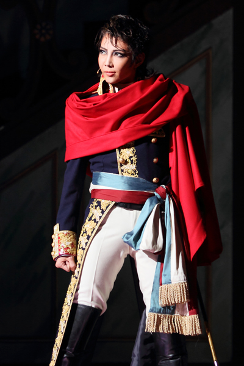

宝塚まとめ
柚希礼音
元星組トップスター
愛称：ちえさん

ちえさんといえばその体格の良さと深みのあるハスキーボイス。舞台上では本物以上の男性らしさを発揮し、相手役のねねちゃん(夢咲ねね)とあわせて「本当にカップルのようだ」と言われるほど。しかし舞台を降りてみると非常に乙女チックで、飼っているチワワには「チョコ」と名付けたり、喋り方がひらがなをよんでいるようだったりと、なんなんだあなたは？！ギャップ萌えの申し子なのか？！と我々を悶えさせた。 彼女の人気は圧倒的なもので、実に真矢みき以来となる日本武道館単独ライブを二度も行ったり、サヨナラ公演ではチケット瞬殺は勿論、当日券に制限が付き、抽選制が取られるほどであった(通常は朝から並べば買えます)。そんな彼女の最大の魅力と言えばそのしなやかなダンスだろう。中学時代にはバレエの大会で優勝したりと高い成績を残している。宝塚に入団を決めたのも、バレリーナとしては体が大きくなりすぎてしまったが踊り続けたいという願いからだそうだ。また、彼女の声も魅力の一つだろう。まるでビロードを撫でるような低音にやられちまったファンの多いことよ。。